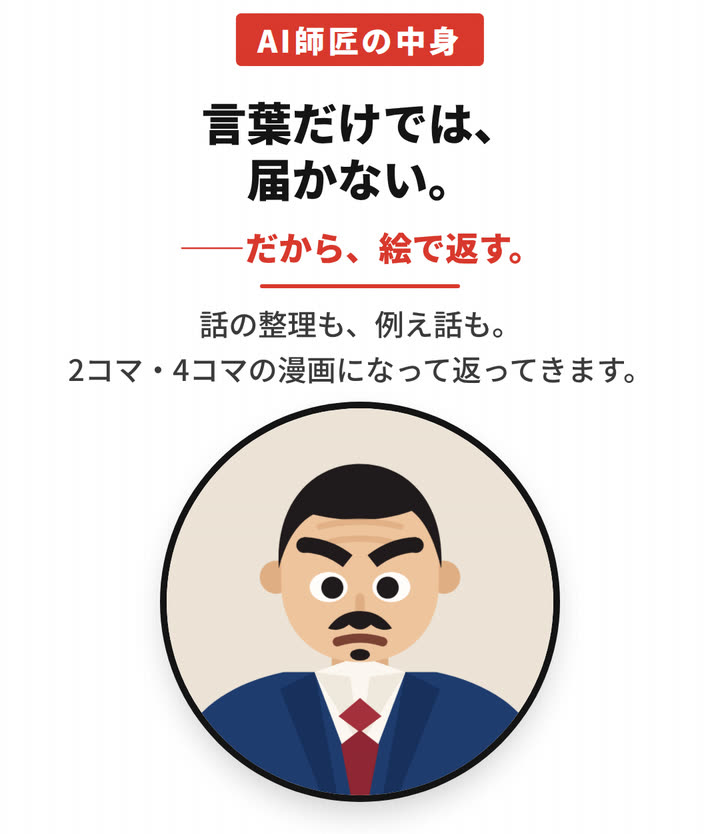
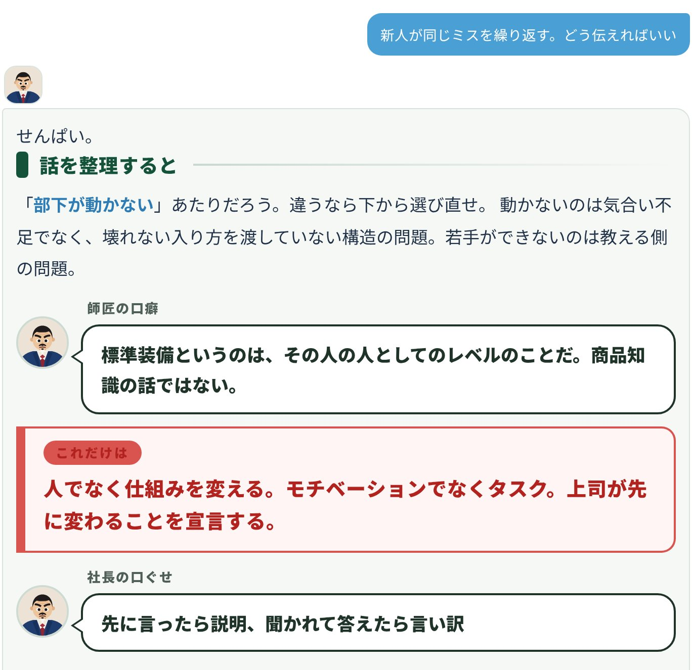
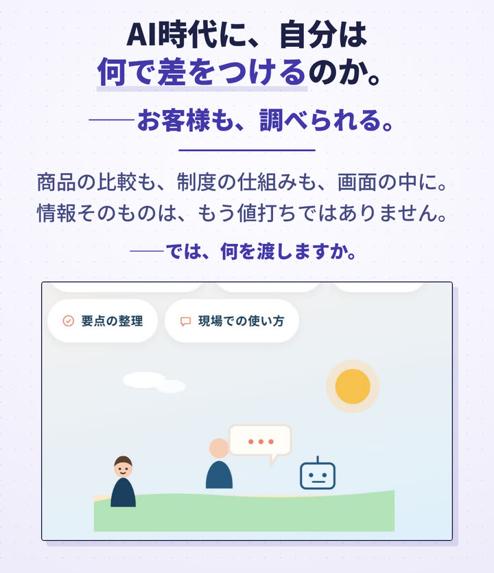
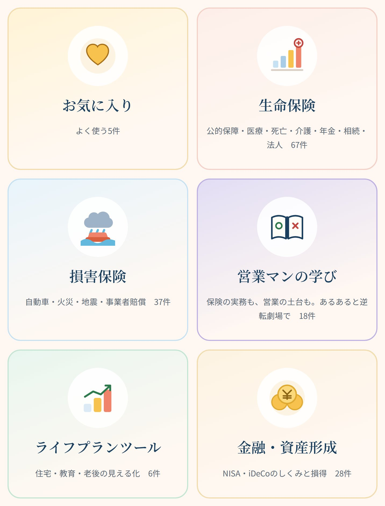
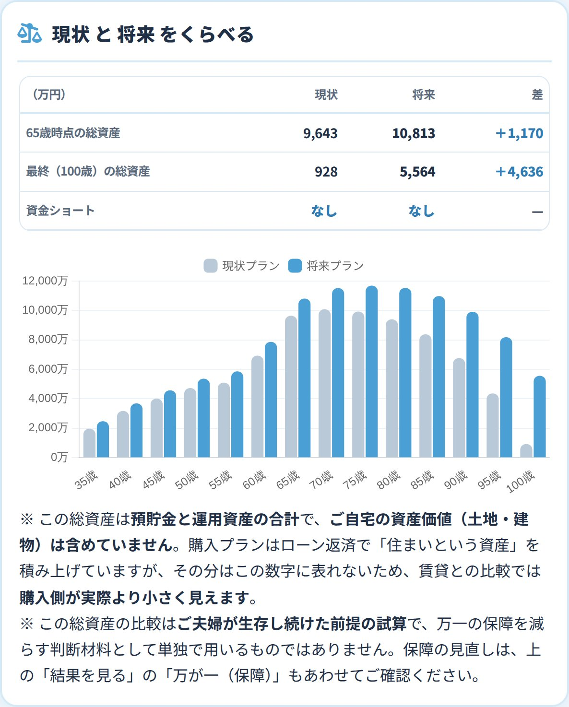

社長には、二十年かけて身につけた型がある。
断られたときの返し方。お客様の前での構え方。数字の見方。
けれど、それを部下に言うと、角が立つ。
同じ言葉でも、評価する人の口から出れば、助言ではなく圧力になる。部下は「分かりました」と答える。三回は聞き返せない。そして、伝わらないまま終わる。
保険代理店さま向け 教育とFPの道具一式
カタツギ型継ぎ
断られたときの返し方。お客様の前での構え方。数字の見方。社長が身につけてきた型を、AI師匠に移して、部下へ渡します。
言葉は、変えなくていい。
変えるのは、言う人です。
オンラインの画面共有で、中をお見せします。その場で決めていただく必要はありません。
社長
型を、言葉にする
12の問いに答えて、ふだんの口ぐせを書き出す。
先に言ったら説明、聞かれて答えたら言い訳
AI師匠（中身は社長が決める）
角の立たない口から出す
評価しない。給料も決めない。だから何度でも聞き返せる。夜十時でも。
部下（次の世代）
相談への返事で、受け取る
これだけは人でなく仕組みを変える。
社長の口ぐせ
先に言ったら説明、聞かれて答えたら言い訳
実際の返事の一節です。全文は「実際の返事」で読めます。
型は、継がれてはじめて型になる。
社長には、二十年かけて身につけた型がある。
断られたときの返し方。お客様の前での構え方。数字の見方。
けれど、それを部下に言うと、角が立つ。
同じ言葉でも、評価する人の口から出れば、助言ではなく圧力になる。部下は「分かりました」と答える。三回は聞き返せない。そして、伝わらないまま終わる。
同じ一言を、言う人だけ変えてみる
「もっと数字を見ろ」
言っている内容は、どちらも同じです。社長の言い方が悪いのでもありません。評価する立場が、部下の聞き返しを止めているだけです。だから、口のほうを変えます。
師匠は、評価しません。給料も決めません。だから部下は、身構えずに聞けます。何を、どんな口調で返すかは、導入のときに社長と一緒に決めます。
1型を、言葉にする
「体育会系ですか」には答えにくくても、「数字を落とした部下に、最初に何を聞きますか」なら答えられます。場面で聞いて、その答えから口調・厳しさ・口ぐせを組み立てます。
3日間の体験版でも、12の問いを試せます。
部下が今月の数字を落としました。最初に何を聞きますか。
12問のあとは
この型で師匠を作る型を紙にするさっそく相談してみる
2師匠に、仕込む
12の問いの答えから、御社の師匠の人となりを決めます。いちばん効くのは、最後の口ぐせです。
返事に混ざる、社長の口ぐせ
先に言ったら説明、聞かれて答えたら言い訳
社長がふだん言っていることを、一行ずつ書き出していただきます。その一行が、部下への返事の「これだけは」のすぐ下に出てきます。
3部下に、届く
部下が相談を打つと、師匠がその場で返します。「これだけは」のすぐ下に、社長の口ぐせが一行。言葉だけで届かない話は、例え話と2コマの絵で返します。
実際の返事を読む
AI師匠の中身／言葉だけでは、届かない。——だから、絵で返す。／話の整理も、例え話も。2コマ・4コマの漫画になって返ってきます。／要は、赤い一行だけ。／聞ける話も、増えました。／場面と答えを、2コマで。／一覧になくても打てば返る。調べる場にも。／例え話 3,344／42冊・488の考え方／心理学・保険の仕組み・お金・経営者への提案
師匠は、社長の口です。
出てくるのは社長の型で、ただ、角の立たない口から出るだけです。
社長の型が、角の立たない口を通って、次の世代へ渡っていく。
カタツギ KATATSUGI型は、継がれてはじめて型になる。
実際の画面から書き写しました。赤い一行が、今日いちばん持ち帰ること。最後の青い一行が、社長の口ぐせです。
「部下が動かない」あたりだろう。違うなら下から選び直せ。動かないのは気合い不足でなく、壊れない入り方を渡していない構造の問題。若手ができないのは教える側の問題。
師匠の口癖
標準装備というのは、その人の人としてのレベルのことだ。商品知識の話ではない。
人でなく仕組みを変える。モチベーションでなくタスク。上司が先に変わることを宣言する。
社長の口ぐせ
先に言ったら説明、聞かれて答えたら言い訳
最後の一行が、人物設定に書いた社長の口ぐせです。
「総務・経理の手続きが分からない」あたりだろう。違うなら下から選び直せ。手続きが分からないのは、覚えていないからではなく、置き場所を知らないからである。どの様式を使うのか、何を添えるのか、いつまでに出すのか。この三つは社内の規程と手引きに書いてあり、毎回同じ場所にある。覚えようとすると忙しい月に崩れるので、覚えるのではなく開く。しめの日だけは動かないので、日付ではなくその前に自分がやることを、予定表へ先に書き写す。
師匠の口癖
今日の1件で、どっち側に向かうかが決まる。今日の話だ。
思い出しで欄を埋めない。分からない欄は空けたまま確かめる。税や労務の扱いは税理士・社会保険労務士の領分で、範囲に入るかどうかを自分で決めない。
社長の口ぐせ
先に言ったら説明、聞かれて答えたら言い訳
「また聞くのは気まずい」も、師匠には何度でも。答えは御社の規程と担当の方で確かめる、まで一緒に返します。
例えるぞ。同じ交差点で毎年事故が起きるなら、直すのは運転手ではなく、その交差点。何でだと思う？
同じ場所で起きているから。
失敗を本人の注意不足で片付けると、記録は欠点の一覧になる。手順・確認のタイミング・任せ方のどこが抜けていたかで書く。
正論の前に、例え話。質問と答えの2コマで、言いにくいことを先に絵にします。
返事は、相談の言葉と設定で変わります。AI師匠は、あらかじめ用意した知識から返す社内向けの相談ツールで、外部のAIサービスには接続していません。

Instagram向けに作った動画から、画面が動く部分だけを抜き出しました。1本10秒ほど、音は出ません。

渡すのは情報ではなく、解釈。その視点を学ぶ教材から。
8本。押すと切り替わります
代理店さま向けの研修用ツールを紹介する動画です。画面の数字は入力例で、お客様への提示用ではありません。
損保の代理店さまからも、生保の代理店さまからも、よくうかがうお話です。
損保の更改で、後輩育成に手が回らない。
生命保険も取り扱いたいが、自分自身もマネジメント方法も分からない。
損保の更改のときに、生保のことを聞かれても自信を持って話せない。
だから当たり障りのない保険料でしか提案できず、単価が上がらない。
新人が保険料の話から入り、保障額の根拠を本人も言葉にできない。
先輩によって言うことが違い、新人がどちらの型に合わせればいいか迷う。
社長の前で、退職金や自社株の話が止まる。
税額の計算と申告は税理士の業務です。教材の中でも、その線を明示しています。
更新の席で生命保険の話を切り出せない
手続きは速く正確に。そのうえで「ご家族は皆さんお元気ですか」を1回だけ聞く。話が広がれば次回の約束、広がらなければそこで締める。
初回面談で何を聞けばいいか分からない
初回は売る場ではなく診断の場。聞く項目の数より、相手が自分から話し始める問いを持っているかで決まる。
乗り換えを提案していいか迷っている
不利益を先に全部言う。それでも相手が望むなら進める。言えないなら提案しない。いまの契約を守る側に立つ人が、長く信頼される。
返事の一節です。実際の返事には、話の整理・例え話・今日やることが続きます。
助かった話だけを集めています。どの話にも「脚色あり」と明記しています。
学習資料は、代理店さまの中で学ぶためのものです。お客様への提示・配布はご遠慮ください。

音声の文字起こしは、お使いのブラウザの機能を使います。提供元へ送られる場合があります。

同じ知識のまま、口調だけが変わります。どちらにするかは、導入のときに社長が決めます。
管理画面の「監査資料」では、研修台帳・募集資料台帳・資格と届出の期限をまとめて印刷できます。記録は、お使いの端末の中に残ります。
どちらも代理店さま単位です。人数による追加の料金はかかりません。
110,000円税込・初回のみ
社内教材・独自資料の取り込みは含みません。別途お見積りです（利用規約 第9条3項）。
募集人5名以下
55,000円
税込・月額
募集人6名以上
110,000円
税込・月額
導入時に組み直した御社用の中身のまま使えます。内容の更新・追加も月額に含みます。
一つずつ組み直してお渡しするため、同時にお受けできるのは20社までとしています。
その場で決めていただく必要はありません。持ち帰って、社内でご検討ください。
2営業日以内にご返信し、日程を決めます。
フォームで体験版の欄に印を付けると、面談の前にURLをお送りします。
オンラインの画面共有で、実際に動かしてお見せします。
ご契約とお支払い（前払い）のあと、12の問いに答えていただき、師匠と前に出す分野を決めます。
ご入金の確認後、最短3営業日で専用URLと合言葉をお渡しします。
発行から7日、または最初に開いたときから72時間の、早いほうで終わります。体験版で入力した内容は、ご契約後には引き継がれません。
面談フォームで、体験版を希望するその場で決めていただく必要はありません。
| 商号 | 株式会社 Office-M |
|---|---|
| 代表者 | 高橋 秀和 |
| FP事業部 執行役員 | 中谷 陽介 |
| 所在地 | 愛媛県伊予郡砥部町宮内592番地1 |
| 連絡先 | y.nakatani@office-m-tax.com |
| 事業内容 | 会計・記帳代行業務を母体とする、ライフプランニング（人生設計・資金計画）の相談支援／保険代理店向け 教育・提案支援ツールの提供 |
| 税務のご相談 | 当社は税理士法人ではありません。税務代理・税務書類の作成・個別具体的な税務相談など税理士にしか行えない業務は、提携する税理士をご紹介し対応します。 |
画面共有で、AI師匠と学習資料、ライフプランツールを実際に動かしてお見せします。持ち帰って社内でご検討いただいて構いません。
30分の面談を申し込むその場で決めていただく必要はありません。
2営業日以内にご返信します。メールでのご連絡：y.nakatani@office-m-tax.com